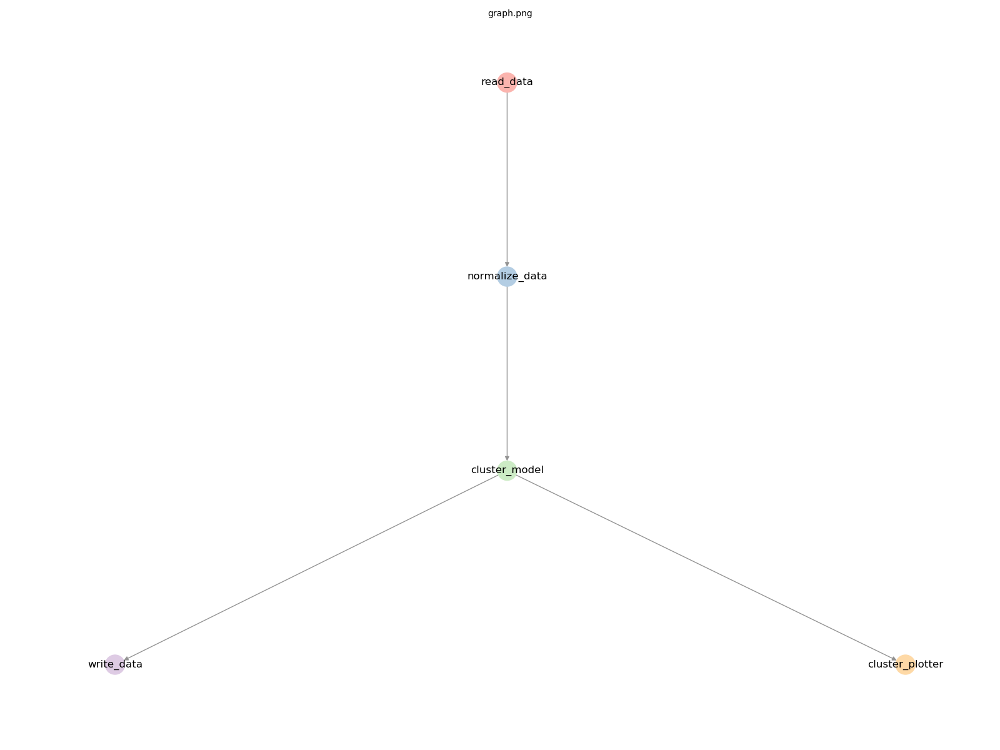
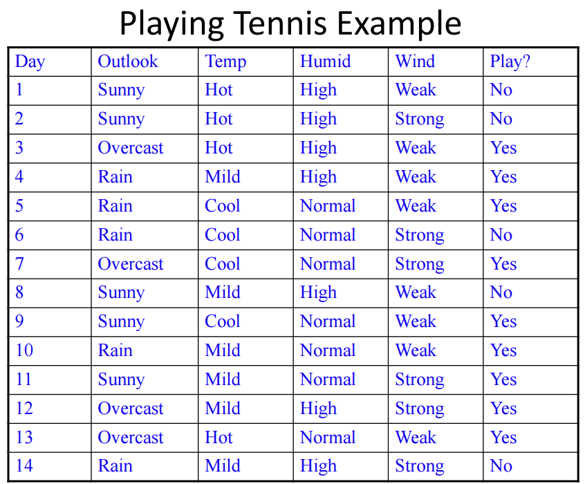

Getting Started¶
In this section, we’ll run some “Hello world” primrose jobs. However, rather than print a string, we’ll do some more useful tasks:
run a read-write job (i.e., read data from a source and write it to some sink; that is, an
Extract-Transfer-Loadjob)run machine learning models, including clustering and classification
Your first primrose job¶
Once you have primrose installed, you can now run a job. First you’ll need to create your own project directory, by
using the primrose command line as follows:
primrose create_project --name <myprojectname>
This will create a directory with everything you need to get started. Just navigate into this directory to begin.
A read write job¶
Open config/hello_world_read_write.json:
{
"implementation_config": {
"reader_config": {
"read_data": {
"class": "CsvReader",
"filename": "data/tennis.csv",
"destinations": [
"write_output"
]
}
},
"writer_config": {
"write_output": {
"class": "CsvWriter",
"key": "data",
"dir": "cache",
"filename": "tennis_output.csv"
}
}
}
}
There are two tasks:
read_data: this run an instance ofCsvReaderwhich loads data fromdata/tennis.csvinto a pandas dataframe and sends the data to the next task:write_output.write_output: this receives the data (associated with a keydata) and uses an instance ofCsvWriterto write the data out tocache/tennis_output.csv.
It might not be obvious that it is pandas under the hood but otherwise this configuration file should be relatively intuitive.
Running the job¶
To run the job, type
primrose run --config config/hello_world_read_write.json
You should see something similar to:
2019-07-23 21:15:09,075 INFO configuration.py __init__: Loading config file at config/hello_world_read_write.json
2019-07-23 21:15:09,081 INFO configuration.py check_sections: OK: all sections are supported operations
2019-07-23 21:15:09,081 INFO configuration.py check_config: OK: all class keys are present
2019-07-23 21:15:09,081 INFO configuration.py check_config: OK: all classes recognized
2019-07-23 21:15:09,081 INFO configuration.py check_config: OK: good necessary_configs
2019-07-23 21:15:09,082 INFO configuration_dag.py create_dag: Checking configuration DAG
2019-07-23 21:15:09,082 INFO configuration_dag.py create_dag: OK: good referential integrity
2019-07-23 21:15:09,082 INFO configuration_dag.py check_connected_components: OK: 1 connected component
2019-07-23 21:15:09,082 INFO configuration_dag.py check_for_cycles: OK: no cycles found
2019-07-23 21:15:09,082 INFO dag_runner.py __init__: Traverser is of class <class 'primrose.dag.config_layer_traverser.ConfigLayerTraverser'>
2019-07-23 21:15:09,083 INFO dag_runner.py filter_sequence: Taking nodes to run from default
2019-07-23 21:15:09,083 INFO dag_runner.py run: received node read_data of type reader_config and class CsvReader
2019-07-23 21:15:09,083 INFO csv_reader.py run: Reading data/tennis.csv from CSV
2019-07-23 21:15:09,109 INFO dag_runner.py run: received node write_output of type writer_config and class CsvWriter
2019-07-23 21:15:09,109 INFO csv_writer.py run: Saving data data to cache/tennis_output.csv
2019-07-23 21:15:09,115 INFO dag_runner.py run: All done. Bye bye!
That’s it. You have run a primrose job.
Examining the output¶
The first half of this output is a set of validation checks against the configuration. You can read more about these checks in DAG Configurations.
The Traverser is some code that determines the order in which the primrose nodes are processed.
Importantly, there are four output lines that show the actual work being done:
2019-07-23 21:15:09,083 INFO dag_runner.py run: received node read_data of type reader_config and class CsvReader
2019-07-23 21:15:09,083 INFO csv_reader.py run: Reading data/tennis.csv from CSV
2019-07-23 21:15:09,109 INFO dag_runner.py run: received node write_output of type writer_config and class CsvWriter
2019-07-23 21:15:09,109 INFO csv_writer.py run: Saving data data to cache/tennis_output.csv
You should now have a file cache/tennis_output.csv that matches the input file data/tennis.csv.
A Machine Learning Job: Clustering¶
Now, let’s do some machine learning. We’ll run a basic K-means clustering and plot the clusters.
Plotting the Graph¶
Before we examine the configuration, let’s plot the graph. type
primrose plot --config config/hello_world_cluster_simple_train.json --outfile graph.png
This will write an image to graph.png

Here we see a read_data node feeding into a normalize_data node feeding into a cluster_model node. The output feeds to write_data and also to cluster_plotter.
Examining the configuration¶
With that background, let’s examine the configuration file. This is `config/hello_world_cluster_simple_train.json
{
"metadata": {
"explanation": ["this is a minimal Sklearn clustering example in training mode:",
" * read in some data from CSV",
" * sklearn.preprocessing.StandardScaler transform the data but no train test split!",
" * cluster with sklearn.cluster.KMeans",
" * predict on same training data, appending predictions column to data",
" * save enriched data to CSV",
" * plot clusters and save image to disk"]
},
"implementation_config": {
"reader_config": {
"read_data": {
"class": "CsvReader",
"filename": "data/unclustered.csv",
"destinations": [
"normalize_data"
]
}
},
"pipeline_config": {
"normalize_data": {
"class": "SklearnPreprocessingPipeline",
"operations": [
{"class":"preprocessing.StandardScaler", "columns": ["x1", "x2"], "args": {"with_mean": true, "with_std": true}}
],
"is_training": true,
"destinations": [
"cluster_model"
]
}
},
"model_config": {
"cluster_model":{
"class": "SklearnClusterModel",
"mode": "train",
"X": ["x1","x2"],
"model": {"class": "cluster.KMeans", "args": {"n_clusters": 6, "random_state": 42}},
"destinations": [
"write_data",
"cluster_plotter"
]
}
},
"writer_config": {
"write_data": {
"class": "CsvWriter",
"key": "data",
"dir": "cache",
"filename": "clustered_output.csv"
}
},
"dataviz_config": {
"cluster_plotter": {
"class": "ClusterPlotter",
"id_col": "cluster_id",
"filename": "clusters.png",
"title": "Results of KMeans(k=6)"
}
}
}
}
Most of it should be relatively intuitive but let’s walk through it.
read_data uses a CsvReader to read in some data. This fees to normalize_data.
normalize_data is a pipeline, a preprocessing step. This is going to run sklearn.preprocessing.StandardScaler on the columns x1 and x2, scaling to zero mean and unit standard deviation. It is in training mode.
This feeds into cluster_model which uses sklearn.cluster.KMeans with k=6 (and seed=42) to cluster the data.
That feeds to a CSvWriter and to a ClusterPlotter. the plotter creates a scatterplot with title “Results of KMeans(k=6)” and saving to clusters.png.
Here is the output:

Congratulations. You have now machined-learned in primrose!
A Machine Learning Job with Model Caching: Classification¶
In this last example, we will train another Sklearn classifier model. However, here, we cache the trained model so that it can be used against a new dataset at a later stage—i.e., in separate primrose job—in either predict or eval mode.
The dataset we are using is Tom Mitchell’s play tennis example to illustrate decision trees:
Here, we run two separate primrose jobs: 1) train, and 2) predict (or eval). Each job has its own configuration file.
config/hello_world_classifier_train.json reads the tennis dataset, does a train test split, runs a Sklearn decision tree model in mode predict, and writes both the TransformerSequence (set of transformation performed on the features) and the model to a local cache using dill:
...
"encode_and_split": {
"class": "EncodeTrainTestSplit",
"is_training": true,
"target_variable": "play",
"training_fraction": 0.65,
"seed": 42,
"destinations": [
"decision_tree_model",
"write_encoder"
]
}
...
"write_encoder": {
"class": "DillWriter",
"key": "transformer_sequence",
"dir": "cache",
"filename": "hello_world_encoder.dill"
},
"write_model": {
"class": "DillWriter",
"key": "model",
"dir": "cache",
"filename": "hello_world_model.dill"
}
A separate configuration file, config/hello_world_classifier_predict.json is designed to make predictions using the cached model. (Ideally, we would use a different dataset but we are using the same tennis dataset here for simplicity. )
In this configuration, we read the data and the two cached objects:
"reader_config": {
"read_data": {
"class": "CsvReader",
"filename": "data/tennis.csv",
"destinations": [
"encode_and_split"
]
},
"read_model": {
"class": "DillReader",
"filename": "cache/hello_world_model.dill",
"destinations": [
"decision_tree_model"
]
},
"read_encoder": {
"class": "DillReader",
"filename": "cache/hello_world_encoder.dill",
"destinations": [
"encode_and_split"
]
}
},
run through the model with mode: predict:
"decision_tree_model": {
"class": "SklearnClassifierModel",
"sklearn_classifier_name": "tree.DecisionTreeClassifier",
"mode": "predict",
"grid_search_scoring": null,
"cv_folds": null,
"destinations": [
"write_output"],
"model_parameters": {}
}
and, finally, write out the predictions
"writer_config": {
"write_output": {
"class": "CsvWriter",
"key": "predictions",
"dir": "cache",
"filename": "hello_world_predictions.csv"
}
}
Try running it yourself. First, run
primrose run --config config/hello_world_classifier_train.json
and inspect the files in the cache folder.
Now run the predict job:
primrose run --config config/hello_world_classifier_predict.json
and find the predictions in the cache folder.
You can also inspect and run the config/hello_world_classifier_eval.json configuration file which produces a number of evaluation metrics to the log file.
You are now set up to design realistic primrose runs in a production setting.
Next¶
Learn more about primrose configurations: DAG Configurations